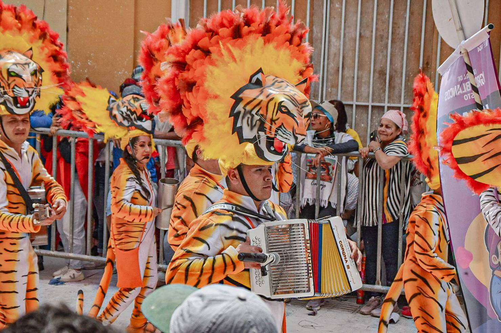

Festivals · Culture
Carnaval de Negros y Blancos 2027
- Dates
- –
- Location
- Pasto, Colombia
- Format
- In-person
- Category
- Culture
- Industry
- Carnival / Culture
- Organiser
- Corpocarnaval with the Alcaldía de Pasto
- Expected attendance
- 623,849
- Official website
- https://carnavaldepasto.org/
About
UNESCO Intangible Cultural Heritage. Main days run from the Carnavalito (2 Jan) to the Desfile Magno (6 Jan); pre-carnival events start earlier. Colombia dates are local (Colombia time, UTC-5 all year, no daylight saving).
Topics: carnival, parades, Andean culture, music, crafts.
Alcaldía de Pasto 2026 accountability report (PDF): 'CARNAVAL DE NEGROS Y BLANCOS 2026 ... Cantidad de visitantes 623.849'.
Sources
- Official — https://carnavaldepasto.org/
- Official (Alcaldía de Pasto, city government) — https://pasto.gov.co/index.php/alcaldia-al-dia/16988-alcaldia-de-pasto-coordina-medidas-de-seguridad-y-organizacion-para-el-onomastico-y-el-carnaval-2027
- Official (Alcaldía de Pasto, city government) — https://www.pasto.gov.co/index.php/component/phocadownload/category/1066-documentos-2026/1311-rendicion-de-cuentas-2026?Itemid=101&download=3116254%3Arendicion-de-cuentas-28-julio-primer-semestre